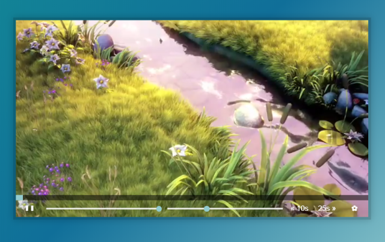

11 — Custom Video Player

主題
介紹如何使用HTML5的video tag來完成各種播放器功能，
播放/暫停、快進/快退、音量控制、速率控制等…
Custom Video Player
Github
步驟
Step1. 基本設定
作者已經有將基礎的css及html tag設定好，僅需針對各項目的功能開始進行js撰寫即可，設定各個變數
1
2
3
4
5
6
7
8
9
| const player = document.querySelector('.player');
const video = player.querySelector('.viewer');
const progress = player.querySelector('.progress');
const progressBar = player.querySelector('.progress__filled');
const toggle = player.querySelector('.toggle');
const skipButtons = player.querySelectorAll('[data-skip]');
const ranges = player.querySelectorAll('.player__slider');
const fullScreenBtn = document.querySelector('.fullScreen');
let change = false
|
Step2. 播放/暫停按鈕
為了在整個播放器範圍及點擊播放按鈕時能播放/暫停，
先針對這兩個元素做addEventListener，
並在togglePlay()中使影片產生對應動作＆更換圖示，
比較特別的是使用了video[method]的寫法，來直接操作video的屬性，
直接用影片是否已暫停paused來做判斷，並更改圖示
1
2
3
4
5
6
7
8
9
10
11
12
13
14
15
| function toggleplay() {
if(video.paused) {
video.play()
} else {
video.pause()
}
}
function updateicon() {
const icon = video.paused ? '►' : '❚ ❚';
toggle.textContent = icon;
}
video.addEventListener('click', toggleplay); //點擊畫面可以撥放及暫停
toggle.addEventListener('click',toggleplay); //點擊撥放按鈕可以撥放以及暫停
video.addEventListener('play', updateicon); //更新撥放按鈕切換為暫停按鈕
video.addEventListener('pause', updateicon); //更新暫停按鈕切換為撥放按鈕
|
Step3. 音量/速率操作
在HTML中已經定義好對應的input-range標籤，
在這裡只需要做監聽並取屬性值來操作就好了！
1
2
| <input type="range" name="volume" class="player__slider" min="0" max="1" step="0.05" value="1">
<input type="range" name="playbackRate" class="player__slider" min="0.5" max="2" step="0.1" value="1">Ï
|
在javascript的部分，ranges是透過querySelectorAll來取得的，
所以可以用forEach來把所有range加上addEventListener，
也因為range是拖曳條，除了click外，也必須要監聽mousemove，
而name的命名volume與playbackRate也就是video本身的屬性，直接使用。
1
2
3
4
5
6
| function updateslider() {
if (!move) {return}
console.log(this.value);
video[this.name] = this.value;
}
ranges.forEach(range => range.addEventListener('change', updateslider)); //聲音調整以及撥放速度調整
|
Step4. 快進/快退操作
一樣也在HTML中的input定義好對應的秒數了，只須取出使用。
1
2
3
4
5
6
7
8
9
10
11
| <button data-skip="-10" class="player__button skip_left"><i class="icon-backward"></i></button>
<button data-skip="25" class="player__button skip_right"><i class="icon-forward"></i></button>
skipButtons也跟Step3的ranges一樣用forEach來加上監聽效果，
取出input中data-skip後透過currentTime來調整影片時間
function skip() {
//dataset.skip = data-skip dataset為自定義的變數
console.log(this.dataset.skip);
//parsefloat 將string轉為數值
video.currentTime += parseFloat(this.dataset.skip);
}
skipButtons.forEach(skipButton => skipButton.addEventListener('click', skip)); //快進25S 倒退10S
|
Step5. 進度條顯示
使用 video 的 currenTime 與 duration 計算出進度％數，
再透過CSS改變進度條的色塊％數，值得一提的是作者有說到兩個監聽參數：
timeupdate 與 progress 都可以做為影片時間變動時的觸發條件，
我稍微小測試後發現，使用 progress 會在載入時就將進度顯示在正確位置，
而 timeupdate 必須在啟動播放後才會去抓到正確的位置，
可以將CSS中的 flexBasis 預設設為50%來觀察這兩者的差別。
1
2
3
4
5
| function updateprogress() {
const percent = (video.currentTime/video.duration) * 100
progressBar.style.flexBasis = `${percent}%`
}
video.addEventListener('timeupdate', updateprogress) //當影片撥放的長度變更時，進度條會變化
|
Step6. 進度條操作(拖曳功能)
在影片的進度條上，做點擊切換段落，或著是按著滑動片段，
分解動作會有：點擊、按住並移動這兩種觸發條件，
為了要讓function能同時判斷兩種狀態，必須要將其中一個條件設flag，
這裡就將mousedown做了一個flag來操作狀態，
並利用e.offsetX的位置及progress.offsetWidth寬度與影片總長來操作當前秒數。
監聽的部分，因為原本重複寫了四次addEventListener，
所以我把會使用到的event寫在一個陣列裡面，使用forEach去執行。
1
2
3
4
5
6
7
8
9
10
11
12
13
| function updateprogressbar(e) {
if (!move) {return}
const updateprogressbartime = (e.offsetX / progress.offsetWidth) * video.duration;
video.currentTime = updateprogressbartime
}
progress.addEventListener('mousedown', updateprogressbar) //可以雙擊進度條直接更新影片進度
let move = false;
progress.addEventListener('mousedown', () => move = true)
ranges.forEach(range => range.addEventListener('mousedown', () => move = true));
progress.addEventListener('mousemove', updateprogressbar)
ranges.forEach(range => range.addEventListener('mousemove', updateslider));
progress.addEventListener('mouseup', () => move = false)
ranges.forEach(range => range.addEventListener('mouseup', () => move = false));
|
Step7. 全螢幕
作者最後有提到的小功能，他說留給我們自己去研究。
首先在HTML中加上對應的功能按鈕與圖標(就是這個放大圖標讓我去用font-aswsome)
1
| <button class="player__button fullScreen" title="Full Screen"><i class="icon-fullscreen"></i></button>
|
然後再javascript中加入這段，多個判斷是為了不同的瀏覽器而寫，
值得一提的是，不用對取消全螢幕特別做處理，預設就會有esc關閉及對應的關閉icon了，
但如果有特別需求可以使用exitFullscreen()來關閉。
1
2
3
4
5
6
7
8
9
10
11
12
| function fullScreen() {
if (video.requestFullscreen) {
video.requestFullscreen();
} else if (video.msRequestFullscreen) {
video.msRequestFullscreen();
} else if (video.mozRequestFullScreen) {
video.mozRequestFullScreen();
} else if (video.webkitRequestFullscreen) {
video.webkitRequestFullscreen();
}
}
fullScreenBtn.addEventListener('click', fullScreen);
|